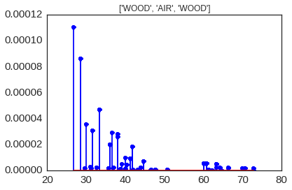
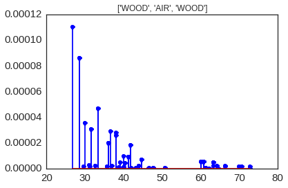

!date
mardi 30 aot 2016, 16:13:03 (UTC+0200)
2.1.1.2. Effect of Modifying the Nature of Sub-Segments¶
This notebook illustrates a simple ray tracing simulation. The environement is a building with 2 rooms. At the interface betweebn the two rooms there is a segment with 3 sub-segment whose material properties are changed in the simulation. The notebook illustrates in details the different steps of the simulation. First we need to import several specialized modules.
from pylayers.simul.link import *
from pylayers.antprop.rays import *
from pylayers.antprop.aarray import *
from pylayers.antprop.channel import *
from pylayers.gis.layout import *
from pylayers.antprop.signature import *
import pylayers.signal.bsignal as bs
import pylayers.signal.waveform as wvf
from pylayers.simul.simulem import *
import matplotlib.pyplot as plt
%matplotlib inline
Let’s start by loading a simple layout with 2 single rooms. The multi subsegment appears in the middle with the red vertical lines. Each subsegment is materialized by a segment.
L=Layout('defstr.ini')
f,a=L.showG('s',subseg=True,figsize=(10,10))

The studied configuration is composed of a simple 2 rooms building
separated by a subsegment which has a multi subsegment attribute. The
attribute of the subsegment can be changed with the method
`chgmss <http://pylayers.github.io/%20pylayers/modules/generated/pylayers.gis.layout.Layout.chgmss.html>`__
(change multisubsegment). In the example WOOD in the lower part then
10cm of AIR then wood again until the ceiling.
L.chgmss(1,ss_name=['WOOD','AIR','WOOD'],ss_z =[(0.0,2.7),(2.7,2.8),(2.8,3)],ss_offset=[0,0,0])
The graph dictionary has the following structure
L.Gs.node
{-12: {},
-11: {},
-10: {},
-9: {},
-8: {},
-7: {},
-6: {},
-5: {},
-4: {},
-3: {},
-2: {},
-1: {},
1: {'connect': [-8, -7],
'name': 'PARTITION',
'ncycles': [],
'norm': array([-1., 0., 0.]),
'offset': 0,
'ss_name': ['WOOD', 'AIR', 'WOOD'],
'ss_offset': [0, 0, 0],
'ss_z': [(0.0, 2.7), (2.7, 2.8), (2.8, 3)],
'transition': True,
'z': (0.0, 3.0)},
2: {'connect': [-8, -2],
'name': 'WALL',
'ncycles': [],
'norm': array([ 1., 0., 0.]),
'offset': 0,
'transition': False,
'z': (0.0, 3.0)},
3: {'connect': [-7, -5],
'name': 'WALL',
'ncycles': [],
'norm': array([-1., 0., 0.]),
'offset': 0,
'transition': False,
'z': (0.0, 3.0)},
4: {'connect': [-6, -1],
'name': 'WALL',
'ncycles': [],
'norm': array([ 1., 0., 0.]),
'offset': 0,
'transition': False,
'z': (0.0, 3.0)},
5: {'connect': [-6, -5],
'name': 'WALL',
'ncycles': [],
'norm': array([ 0., 1., 0.]),
'offset': 0,
'transition': False,
'z': (0.0, 3.0)},
6: {'connect': [-5, -4],
'name': 'WALL',
'ncycles': [],
'norm': array([ 0., 1., 0.]),
'offset': 0,
'transition': False,
'z': (0.0, 3.0)},
7: {'connect': [-4, -3],
'name': 'WALL',
'ncycles': [],
'norm': array([ 1., 0., 0.]),
'offset': 0,
'transition': False,
'z': (0.0, 3.0)},
8: {'connect': [-3, -2],
'name': 'WALL',
'ncycles': [],
'norm': array([ 0., -1., 0.]),
'offset': 0,
'transition': False,
'z': (0.0, 3.0)},
9: {'connect': [-2, -1],
'name': 'WALL',
'ncycles': [],
'norm': array([ 0., 1., 0.]),
'offset': 0,
'transition': False,
'z': (0.0, 3.0)},
10: {'connect': [-9, -10],
'name': '_AIR',
'norm': array([ 0., -1., 0.]),
'offset': 0,
'transition': True,
'z': [0.0, 3.0]},
11: {'connect': [-10, -11],
'name': '_AIR',
'norm': array([ 1., 0., 0.]),
'offset': 0,
'transition': True,
'z': [0.0, 3.0]},
12: {'connect': [-11, -12],
'name': '_AIR',
'norm': array([ 0., 1., 0.]),
'offset': 0,
'transition': True,
'z': [0.0, 3.0]},
13: {'connect': [-12, -9],
'name': '_AIR',
'norm': array([ 1., 0., 0.]),
'offset': 0,
'transition': True,
'z': [0.0, 3.0]}}
We define now, the position of the transmitter and the receiver, the two points which are always the termination of a radio link.
#tx=np.array([759,1114,1.5])
#rx=np.array([767,1114,1.5])
tx=np.array([759,1114,1.5])
rx=np.array([767,1114,1.5])
fGHz=np.linspace(1,11,100)
#Aa = Antenna('S1R1.vsh3')
#Ab = Antenna('S1R1.vsh3')
Aa = Antenna('Gauss',fGHz=fGHz)
Ab = Antenna('Gauss',fGHz=fGHz)
Ab.eval()
Aa.eval()
#Aa = AntArray(N=[8,1,1],fGHz=fGHz)
#Ab = AntArray(N=[4,1,1],fGHz=fGHz)
Lk = DLink(L=L,a=tx,b=rx,Aa=Aa,Ab=Ab,fGHz=fGHz,cutoff=5)
ak,tauk=Lk.eval(force=True,verbose=False)
This is the first time the Layout is used. Graphs have to be built. Please Wait
building Layout ...
check len(ncycles) == 2 passed
ak.shape
(140, 1, 100)
plt.stem(tauk,ak[:,0,0])
<Container object of 3 artists>
A link is the set of a layout and 2 termination points.
Aa.eval()
Aa.plotG()

(<matplotlib.figure.Figure at 0x7fc76c072bd0>,
<matplotlib.projections.polar.PolarAxes at 0x7fc7090b74d0>)
Lk.C.Ctt
FUsignal : (100,) (140, 100)
ak,tauk=Lk.eval(force=True,a=tx,b=rx,applywav=True)
Lk.C
Ctilde : Ray Propagation Channel Matrices
---------
(140, 100)
Nray : 140
fmin(GHz) : 1.0
fmax(GHz): 11.0
Nfreq : 100
f = plt.figure(figsize=(10,10))
f,a=Lk.C.show(cmap='jet',fig=f,typ='l20',vmin=-120,vmax=-10)
fGHz=np.arange(2,6,0.1)
wav = wvf.Waveform(fcGHz=4,bandGHz=1.5)
wav.show()
Lk = DLink(L=L,a=tx,b=rx,fGHz=fGHz)
This is the first time the Layout is used. Graphs have to be built. Please Wait
building Layout ...
check len(ncycles) == 2 passed
Position of the transmitter
Lk.a
array([ 759. , 1114. , 1.5])
Position of the receiver
Lk.b
array([ 767. , 1114. , 1.5])
cir = Lk.H.applywavB(wav.sf)
WARNING : Tchannel.applywavB is going to be replaced by Tchannel.applywav
layer = ['AIR','AIR','AIR']
Lk.L.chgmss(1,ss_name=layer)
Lk.L.Gs.node[1]['ss_name']=layer
#Aa = Antenna('Omni',fGHz=fGHz)
#Aa = Antenna('Omni',fGHz=fGHz)
ak,tauk=Lk.eval(force=True,verbose=0,fGHz=fGHz)
plt.stem(Lk.H.taud,Lk.H.ak[:,0,20])
plt.title(str(layer))
plt.figure()
layer = ['METAL','METAL','METAL']
Lk.L.chgmss(1,ss_name=layer)
Lk.L.Gs.node[1]['ss_name']=layer
ak,tauk=Lk.eval(force=True,verbose=0,fGHz=fGHz)
plt.stem(Lk.H.taud,Lk.H.ak[:,0,20])
plt.title(str(layer))
#plt.stem(Lk.H.taud,Lk.H.ak[:,0,50])
plt.figure()
layer = ['WOOD','AIR','WOOD']
Lk.L.chgmss(1,ss_name=layer)
Lk.L.Gs.node[1]['ss_name']=layer
ak,tauk=Lk.eval(force=True,verbose=0,fGHz=fGHz)
plt.title(str(layer))
plt.stem(Lk.H.taud,Lk.H.ak[:,0,20])
<Container object of 3 artists>
 

We have modified successively the nature of the 3 surfaces in the sub
segment placed in the separation partition. The first was AIR, the
second WOOD and the third METAL. As the subsegment is placed on the LOS
path the blockage effect is clearly visible. The chosen antennas were
omni directional Antenna('Omni')